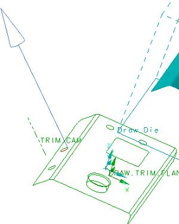

在 DFM 顾问对话框的列表中，选择冲裁 (1)。
注意到相应的 DFM 特征将在视图中高亮显示，并出现一个矢量。

点击确定。
将在选定的特征上执行 DFM 分析。
非一致性窗口将报告已找到的不一致。
点击返回。
您现在可以重新指定要分析的特征。
在 DFM 顾问对话框的准则列表中，选择选择所有准则以分析全部 DFM 特征。
将有一个复选标记出现在列表中的所有特征名称旁边。
选中分析 所有 DFM 特征复选框。
点击应用。
非一致性窗口对话框将列出所有 DFM 特征，包括那些未通过标准的。
您可以通过更改设计或通过说明不一致性将被接受而不做进一步部件修改，来矫正不合格特征。
点击非一致性窗口对话框中的取消。
关闭部件。